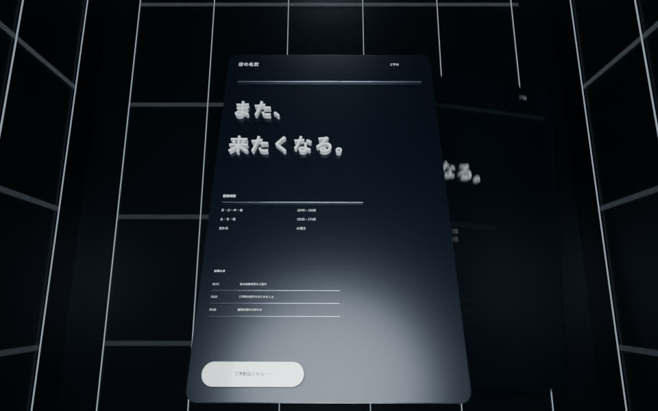

01 / 0〜2秒

A / 静かB / 大胆
このページ、
どう動かす？
どう動かす？
0秒から同じページを上下に出し、両方が動き始める。最後までAとBの位置を変えない。
同じページを「静かな動き」と「大胆な動き」で見比べる、約20秒の一本。
動きも雰囲気も、まだ物足りない。広告を作り直している今の悩みを、見た人も一緒に判断できる比較にします。
本制作前の絵コンテです。画像は既存の自社映像から。A・Bの動きはこれから試作する案で、改善後の映像ではありません。秒数は声を入れてから調整します。
01 / 0〜2秒

A / 静か0秒から同じページを上下に出し、両方が動き始める。最後までAとBの位置を変えない。
02 / 2〜7秒
同じ時間の中で動きの差を見せる。自分の仕事を知ってもらう広告を作っていることは、声で短く伝える。
03 / 7〜14秒
Bはページが手前へ抜け、その動きのまま次の画面へつなぐ。Aも動かし続け、両方を同時に見比べられるようにする。
04 / 14〜20秒
AとBの同じ瞬間を上下で見比べる。見た人がお店の雰囲気に合わせて選べるところで終わる。
このページ、どう動かす？
自分の仕事を知ってもらう広告を作ってます。
でも、動きも雰囲気も、まだ物足りない。
だから、同じページで動きを変えてみます。
落ち着いた動きと、大きく変わる動き。
自分のお店なら、どっちが好き？
合成音声を想定。本人の実写・地声、お客様のサイト映像は使いません。表示するのは自社の試作ページです。
動きを増やすことと、見やすさや雰囲気を保つことを両立できるか。同じページ・同じ色・同じ言葉で見比べ、動きの違いが分かる構成にします。
まずこの構成を確認し、決まったら動きを試作します。書き出した後に手本と同じ秒のコマを並べ、違いを確認して直します。再生数や反応の結果は、公開後に確かめます。
10月15日に取得した再生数。選定に使った候補で、この数字から今回の再生数を予測するものではありません。
0・0.5・1・1.5・2・3・5・8秒・終盤のコマで確認。5本とも同じ場面の制作段階を上下に並べていました。今回はこの比較の配置を参考にします。キャラクター映像は動画に使いません。